Click on the buttons below to filter the smoothies by their main ingredients

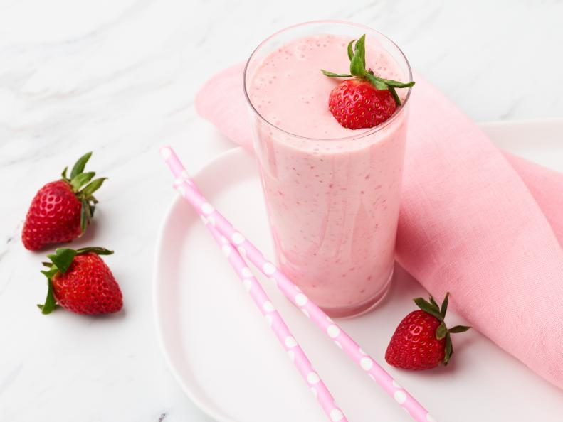
Strawberry-Banana Smoothie
Ingredients:
- 1 banana
- 1 cup strawberries
- 1/2 cup vanilla yogurt
- 1/2 cup milk
- 2 teaspoons honey
- Pinch of ground cinnamon
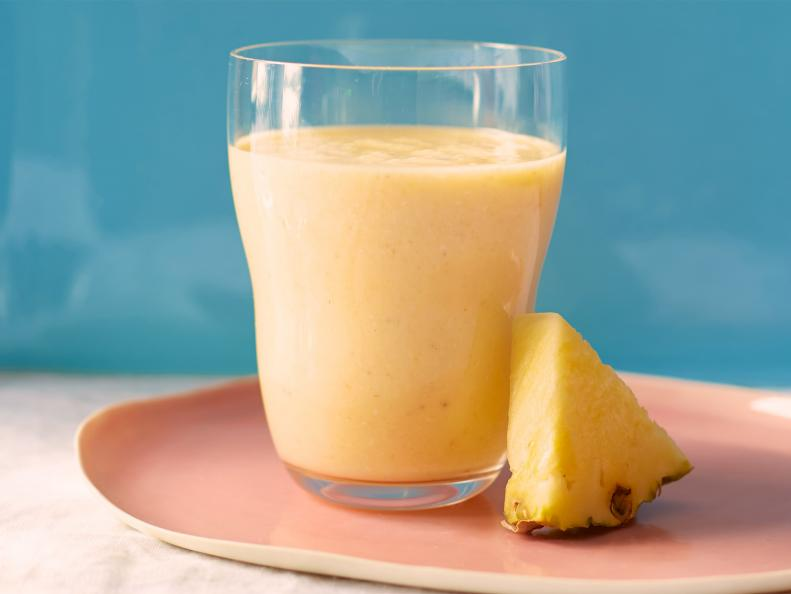
Tropical Oatmeal Smoothie
Ingredients:
- 1/2 cup old-fashioned rolled oats
- 1 small banana, peeled and broken into 4 pieces
- 1 1/2 cups plain unsweetened coconut milk beverage
- Juice of 1/2 small lemon (about 1 tablespoon)
- 1/2 teaspoon pure vanilla extract
- Kosher salt
- 3/4 cup frozen unsweetened mango cubes
- 3/4 cup frozen unsweetened pineapple cubes
- Fresh pineapple wedges, for garnish
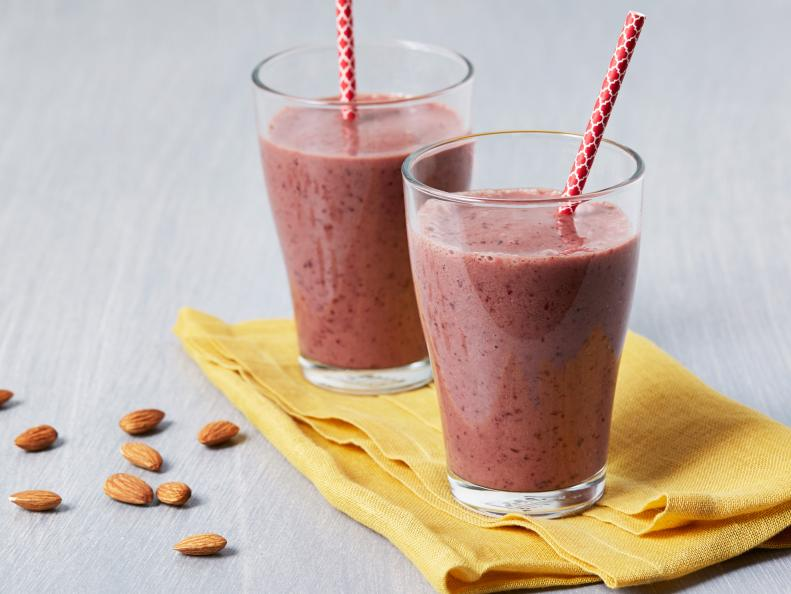
Cherry-Almond Smoothie
Ingredients:
- 1 banana, sliced
- 2 cups frozen pitted cherries
- 1 cup almond milk
- 1/2 cup low-fat yogurt
- 1 to 2 tablespoons honey
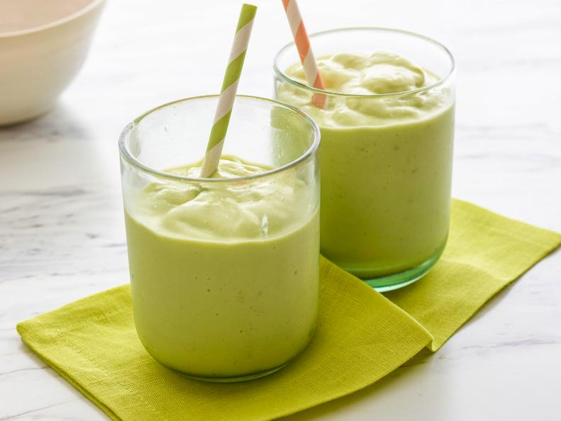
Ultra-Creamy Avocado Smoothie
Ingredients:
- 1 cup milk
- 1/2 cup sweetened condensed milk, plus more to taste
- 2 cups crushed ice
- 2 ripe Hass avocados, pitted
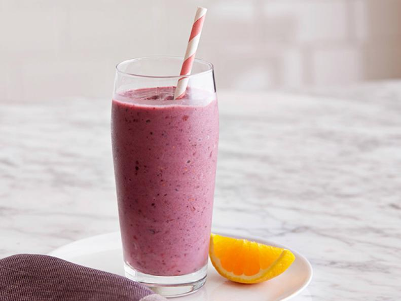
Mixed Berries and Banana Smoothie
Ingredients:
- 1 cup frozen mixed berries
- 1 frozen ripe banana
- 1/2 cup low-fat vanilla yogurt
- 1/4 cup orange juice
- 1 teaspoon honey (optional)
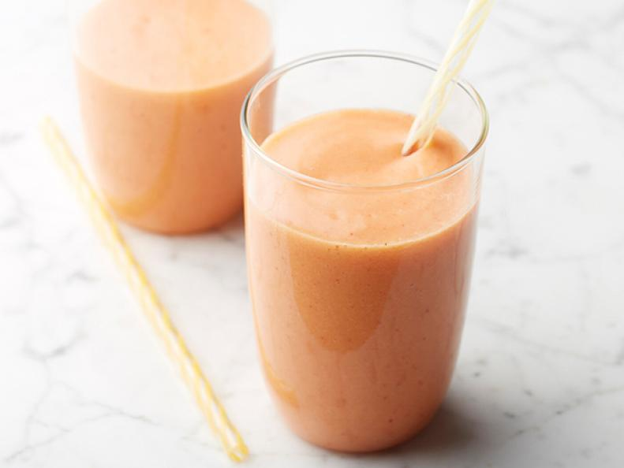
Mango, Strawberry, and Pineapple Smoothie
Ingredients:
- 1 mango, skin removed, cut into 1-inch dice, frozen
- 5 strawberries, stems removed, cut half, frozen
- 1 cup diced pineapple
- 1 cup orange juice
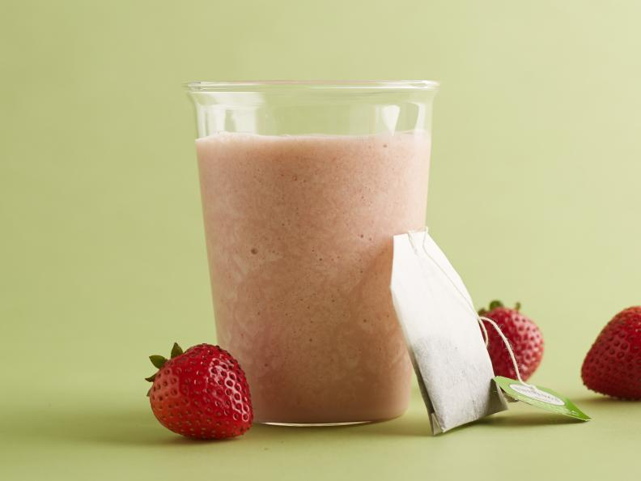
Strawberry-Green Tea Smoothie
Ingredients:
- 1 green tea bag
- 3/4 cup very hot water
- 1 cup fresh strawberries, halved, plus 1 sliced strawberry for garnisht
- 1/4 cup lowfat milk
- 1/2 lime, juiced
- 1 tablespoon honey
- 6 fresh mint leaves
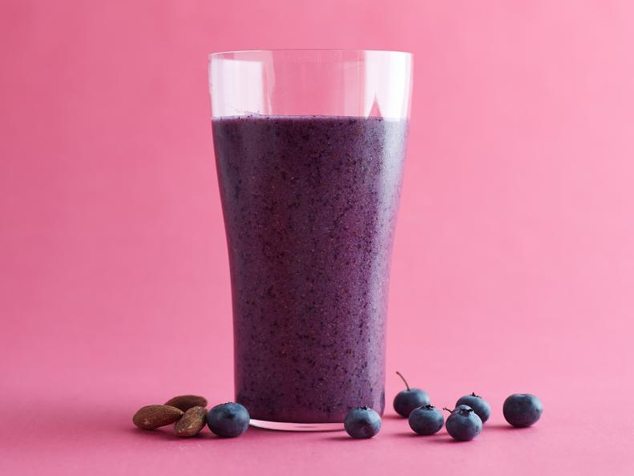
Blueberry-Almond Smoothie
Ingredients:
- 1 cup blueberries, plus more for garnish
- 2 tablespoons roasted, salted almonds
- 1 tablespoon honey
- 3/4 cup ice cubes
- 1/4 cup unsweetened almond milk
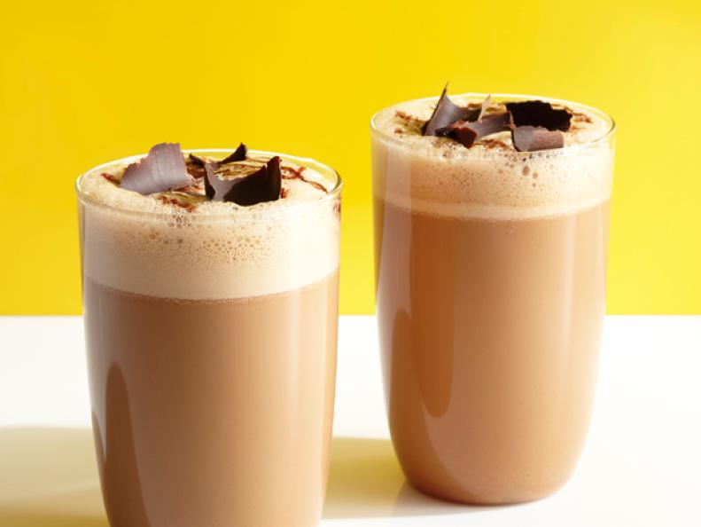
Vietnamese Coffee Smoothie
Ingredients:
- 1/2 cup chilled espresso
- 1/4 cup sweetened condensed milk
- 1 1/2 cups ice
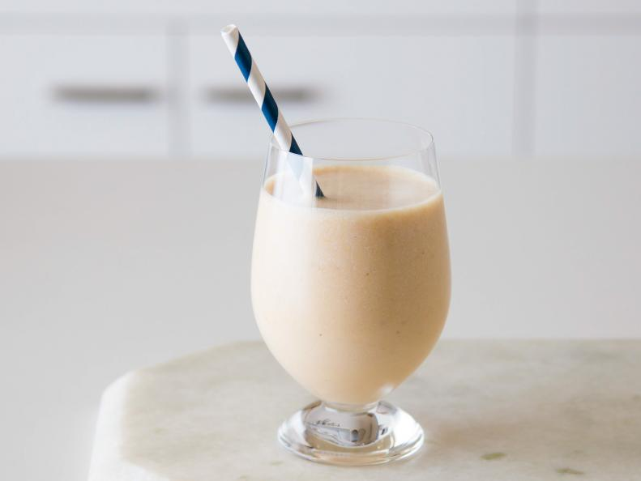
Peanut Butter Split Smoothie
Ingredients:
- 1 ripe banana, quartered and frozen
- 1/2 cup nonfat milk
- 1/4 cup plain nonfat yogurt
- 1 1/2 tablespoons creamy, natural, peanut butter
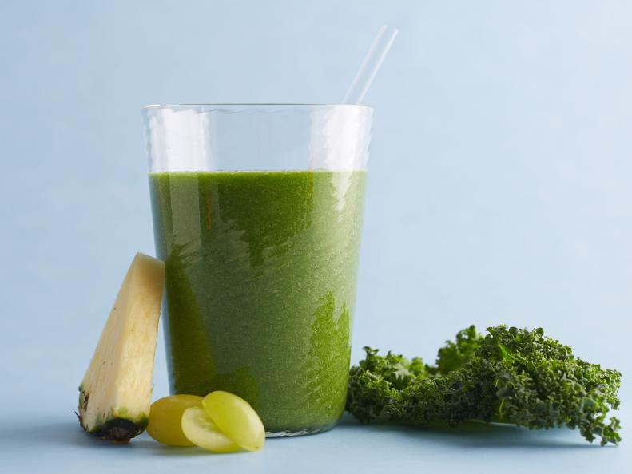
Green Smoothie
Ingredients:
- 1 cup chopped fresh pineapple, plus a pineapple wedge for garnish
- 1 cup packed chopped kale (stems removed)
- 1 cup frozen green grapes
- 1 tablespoon fresh lemon juice
- 1 teaspoon finely grated fresh ginger
- 1 teaspoon ground flaxseed
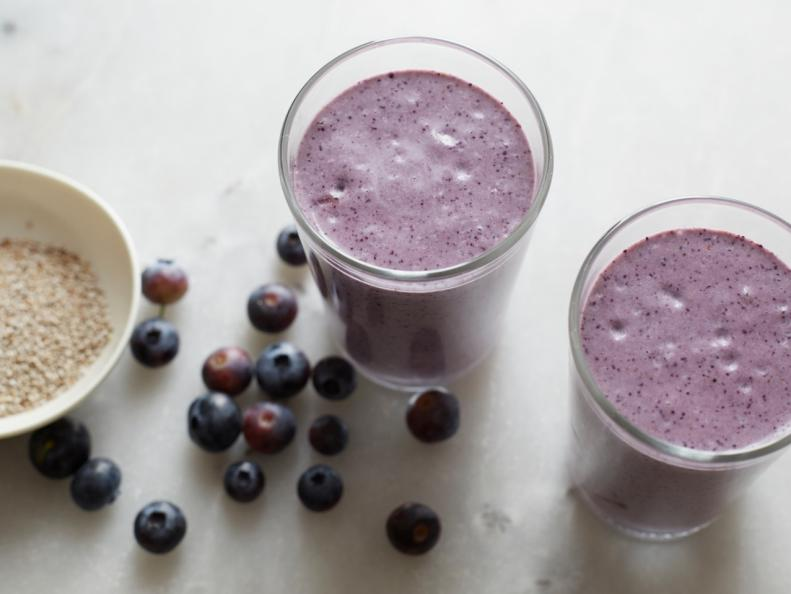
Blueberry and Chia Seed Smoothie
Ingredients:
- 2 tablespoons chia seeds
- 1 1/2 cups almond milk
- 1 cup blueberries
- 1 teaspoon pure vanilla extract
- 1 heaping tablespoon coconut butter or coconut oil
- Pinch cinnamon
- Raw honey
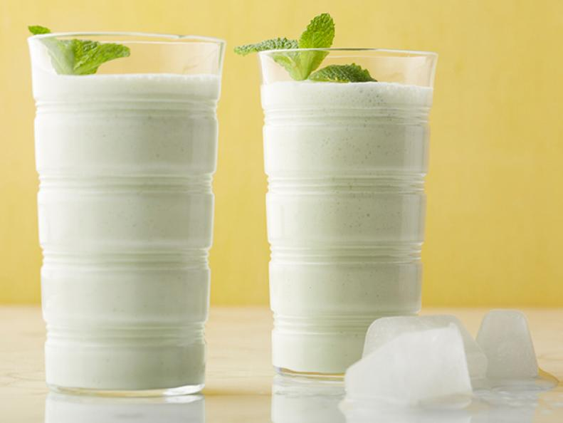
Vanilla Bean Coconut Yogurt Smoothiex
Ingredients:
- 1/2 water
- 1/2 cup honey
- 1 vanilla bean, split lengthwise
- 2 cups Greek yogurt
- 1 teaspoon torn fresh mint leaves, plus sprigs for garnish
- Coconut water, frozen in ice cube tray (approximately 1/2 tray)
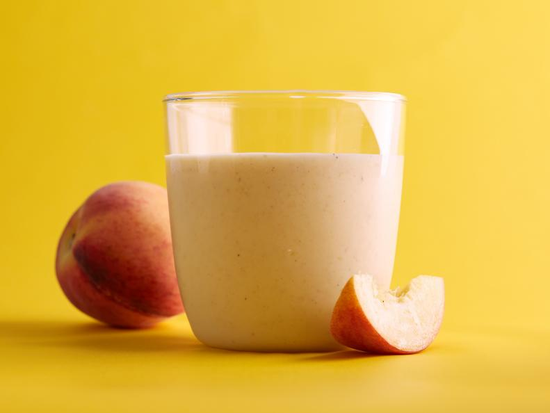
Peachy Oat Smoothie
Ingredients:
- 3 tablespoons quick-cooking rolled oats
- 1/4 cup hot water
- 2 small, ripe yellow peaches, peeled, pitted and roughly chopped, plus one wedge reserved for garnish
- 3/4 cup ice cubes
- 1/3 cup lowfat vanilla yogurt
- 1 tablespoon honey
- Pinch ground cinnamon
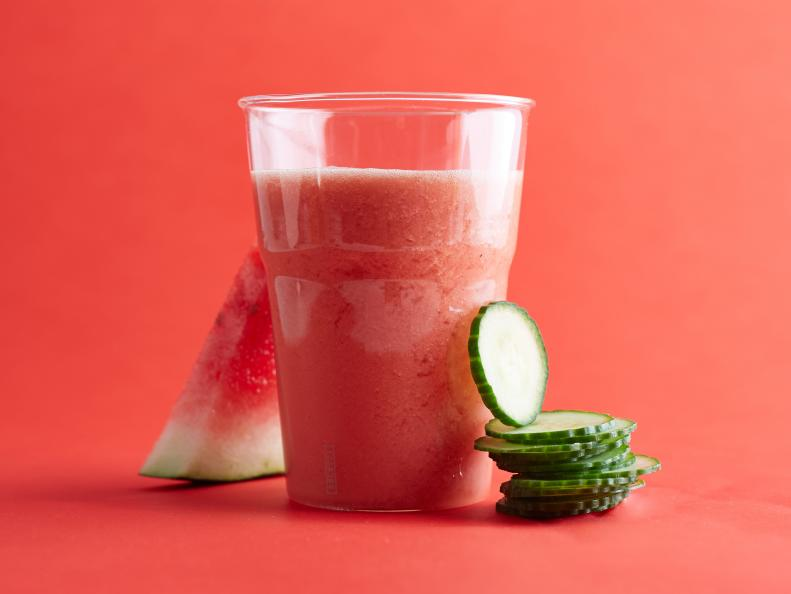
Watermelon-and-Cucumber Smoothie
Ingredients:
- One 2-inch piece English cucumber, peeled and roughly chopped (about 1/2 cup), plus one slice reserved for garnish
- 3 tablespoons low-fat buttermilk
- 1 tablespoon honey, optional
- 1/2 small lime, juiced (about 1 tablespoon)
- 2 cups cubed seedless watermelon, frozen
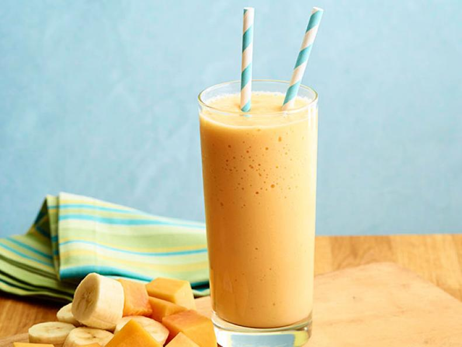
Papaya-Banana Smoothie
Ingredients:
- 1 cup milk
- 1/4 cup Greek yogurt
- 1 teaspoon pure vanilla extract
- 1 small ripe banana, peeled and sliced
- 1/2 large, ripe papaya, peeled, seeded and chopped
- 1 cup ice cubes
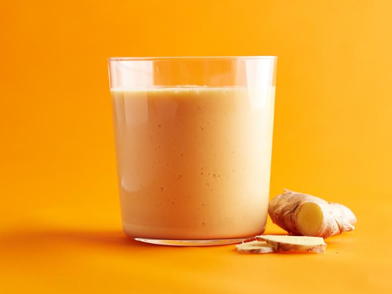
Pumpkin-Ginger Smoothie
Ingredients:
- 1/2 cup pure pumpkin puree
- 1/2 cup lowfat plain yogurt
- 3/4 cup ice cubes
- 2 tablespoons pure maple syrup
- 1 tablespoon apple cider vinegar
- 1/2-inch piece fresh ginger, peeled and grated
- Pinch ground cinnamon, plus more for garnish